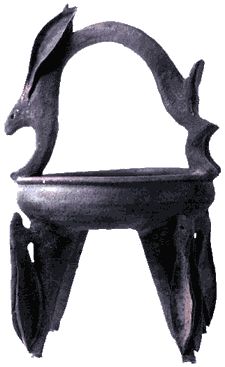

| Ken
Ferguson
American Studio-potter
Ken
Ferguson (1938-2004) studied at various art institutions,
receiving his MFA from Alred University in 1954. From 1964 on he
was he was head of the ceramics department at Kansas City Art Institute,
where in 1996, his year of 'retirement', he became professor emeritus
in ceramics. In 1981 he was voted one of the 12 greatest living
potters in a readers' survey by Ceramics Monthly magazine.
His students include many successful contemporary
ceramicists including Chris Gustin, Richard Notkin, Akio Takamori,
Kurt Weiser and others. This success can probably be attributed
to Ferguson's teaching philosophy, which was to give every student
whatever he or she needed to become a successful artist potter,
while at the same time encouraging them to develop their own styles.
Ferguson worked in high-fired stoneware and also experimented
with salt-glazing.
Despite his retirement, Ferguson continued to give
workshops
and demonstrations across the US.
More Articles
More Pots of the Week
|